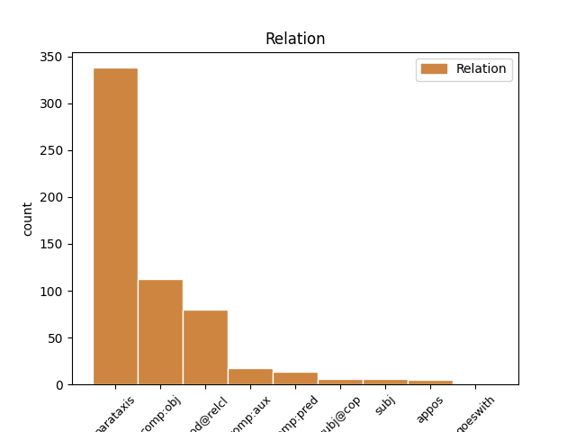
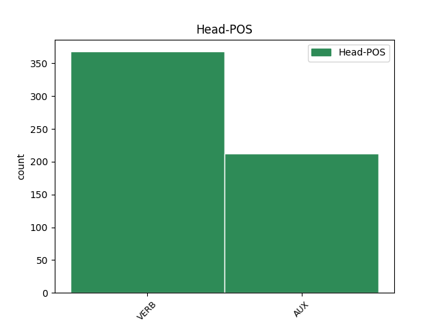
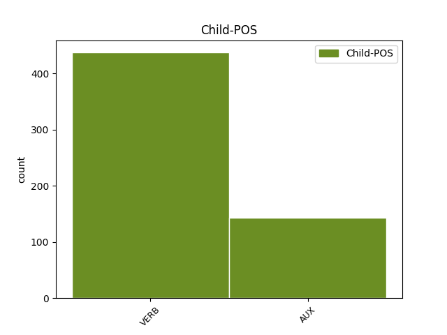

Distribution of features within this leaf



Agreement Rules sorted by frequency.
- When the dependent token is the parataxis(parataxis) of the head token,
1 " _ _ _ _ 0 _ _ _
2 Muiden _ _ _ _ 0 _ _ _
3 pelaajien _ _ _ _ 0 _ _ _
4 mukaan _ _ _ _ 0 _ _ _
5 hän _ _ _ _ 0 _ _ _
6 käyttäytyi käyttäytyä VERB V Mood=Ind|Number=Sing|Person=3|Tense=Past|VerbForm=Fin|Voice=Act 0 _ _ _
7 jostain _ _ _ _ 0 _ _ _
8 syystä _ _ _ _ 0 _ _ _
9 hermostuneesti _ _ _ _ 0 _ _ _
10 " _ _ _ _ 0 _ _ _
11 , _ _ _ _ 0 _ _ _
12 kertoi kertoa VERB V Mood=Ind|Number=Sing|Person=3|Tense=Past|VerbForm=Fin|Voice=Act 6 parataxis _ _
13 joukkueenjohtaja _ _ _ _ 0 _ _ _
14 Jorge _ _ _ _ 0 _ _ _
15 Bastos _ _ _ _ 0 _ _ _
16 . _ _ _ _ 0 _ _ _
1 Tutkintonimikkeet _ _ _ _ 0 _ _ _
2 kertovat kertoa VERB V Mood=Ind|Number=Plur|Person=3|Tense=Pres|VerbForm=Fin|Voice=Act 0 _ _ _
3 , _ _ _ _ 0 _ _ _
4 millaisen _ _ _ _ 0 _ _ _
5 ammatillisen _ _ _ _ 0 _ _ _
6 koulutuksen _ _ _ _ 0 _ _ _
7 isännöitsijä _ _ _ _ 0 _ _ _
8 on olla AUX V Mood=Ind|Number=Sing|Person=3|Tense=Pres|VerbForm=Fin|Voice=Act 2 comp:obj _ _
9 suorittanut _ _ _ _ 0 _ _ _
10 . _ _ _ _ 0 _ _ _
1 Kurssi _ _ _ _ 0 _ _ _
2 jatkoi jatkaa VERB V Mood=Ind|Number=Sing|Person=3|Tense=Past|VerbForm=Fin|Voice=Act 0 _ _ _
3 kuitenkin _ _ _ _ 0 _ _ _
4 jyrkkää _ _ _ _ 0 _ _ _
5 syöksyä _ _ _ _ 0 _ _ _
6 markkinoilla _ _ _ _ 0 _ _ _
7 , _ _ _ _ 0 _ _ _
8 minkä _ _ _ _ 0 _ _ _
9 johdosta _ _ _ _ 0 _ _ _
10 euro _ _ _ _ 0 _ _ _
11 maksoi maksaa VERB V Mood=Ind|Number=Sing|Person=3|Tense=Past|VerbForm=Fin|Voice=Act 2 mod@relcl _ _
12 jo _ _ _ _ 0 _ _ _
13 265 _ _ _ _ 0 _ _ _
14 kruunua _ _ _ _ 0 _ _ _
15 . _ _ _ _ 0 _ _ _
1 Jos _ _ _ _ 0 _ _ _
2 vanhemmat _ _ _ _ 0 _ _ _
3 elävät _ _ _ _ 0 _ _ _
4 useita _ _ _ _ 0 _ _ _
5 vuosia _ _ _ _ 0 _ _ _
6 yhdessä _ _ _ _ 0 _ _ _
7 , _ _ _ _ 0 _ _ _
8 saattaa saattaa AUX V Mood=Ind|Number=Sing|Person=3|Tense=Pres|VerbForm=Fin|Voice=Act 0 _ _ _
9 yksittäinen _ _ _ _ 0 _ _ _
10 poikanen _ _ _ _ 0 _ _ _
11 elää elää VERB V Mood=Ind|Number=Sing|Person=3|Tense=Pres|VerbForm=Fin|Voice=Act 8 comp:aux _ _
12 ryhmässä _ _ _ _ 0 _ _ _
13 jopa _ _ _ _ 0 _ _ _
14 kuusi _ _ _ _ 0 _ _ _
15 vuotta _ _ _ _ 0 _ _ _
16 muodostamatta _ _ _ _ 0 _ _ _
17 omaa _ _ _ _ 0 _ _ _
18 ryhmää _ _ _ _ 0 _ _ _
19 tai _ _ _ _ 0 _ _ _
20 siirtymättä _ _ _ _ 0 _ _ _
21 muualle _ _ _ _ 0 _ _ _
22 . _ _ _ _ 0 _ _ _
1 Large _ _ _ _ 0 _ _ _
2 Hadron _ _ _ _ 0 _ _ _
3 Colliderin _ _ _ _ 0 _ _ _
4 on olla AUX V Mood=Ind|Number=Sing|Person=3|Tense=Pres|VerbForm=Fin|Voice=Act 0 _ _ _
5 tarkoituksena _ _ _ _ 0 _ _ _
6 on olla AUX V Mood=Ind|Number=Sing|Person=3|Tense=Pres|VerbForm=Fin|Voice=Act 4 comp:pred _ _
7 selvittää _ _ _ _ 0 _ _ _
8 muun _ _ _ _ 0 _ _ _
9 muassa _ _ _ _ 0 _ _ _
10 materian _ _ _ _ 0 _ _ _
11 alkuperä _ _ _ _ 0 _ _ _
12 ja _ _ _ _ 0 _ _ _
13 kuinka _ _ _ _ 0 _ _ _
14 maailmankaikkeus _ _ _ _ 0 _ _ _
15 syntyi _ _ _ _ 0 _ _ _
16 . _ _ _ _ 0 _ _ _
1 " _ _ _ _ 0 _ _ _
2 3. _ _ _ _ 0 _ _ _
3 Mitä _ _ _ _ 0 _ _ _
4 1 _ _ _ _ 0 _ _ _
5 ja _ _ _ _ 0 _ _ _
6 2 _ _ _ _ 0 _ _ _
7 kohdassa _ _ _ _ 0 _ _ _
8 säädetään säätää VERB V Mood=Ind|Tense=Pres|VerbForm=Fin|Voice=Pass 9 subj _ _
9 koskee koskea VERB V Mood=Ind|Number=Sing|Person=3|Tense=Pres|VerbForm=Fin|Voice=Act 0 _ _ _
10 vastaavasti _ _ _ _ 0 _ _ _
11 yhdenmukaistettuja _ _ _ _ 0 _ _ _
12 menettelytapoja _ _ _ _ 0 _ _ _
13 . _ _ _ _ 0 _ _ _
14 " _ _ _ _ 0 _ _ _
1 Juoksin juosta VERB V Mood=Ind|Number=Sing|Person=1|Tense=Past|VerbForm=Fin|Voice=Act 0 _ _ _
2 , _ _ _ _ 0 _ _ _
3 juoksin juosta VERB V Mood=Ind|Number=Sing|Person=1|Tense=Past|VerbForm=Fin|Voice=Act 1 appos _ _
4 niin _ _ _ _ 0 _ _ _
5 kauas _ _ _ _ 0 _ _ _
6 kuin _ _ _ _ 0 _ _ _
7 jaksoin _ _ _ _ 0 _ _ _
8 . _ _ _ _ 0 _ _ _
1 Tutkijoiden _ _ _ _ 0 _ _ _
2 tavoitteena _ _ _ _ 0 _ _ _
3 on olla AUX V Mood=Ind|Number=Sing|Person=3|Tense=Pres|VerbForm=Fin|Voice=Act 0 _ _ _
4 tunnistaa tunnistaa VERB V Mood=Ind|Number=Sing|Person=3|Tense=Pres|VerbForm=Fin|Voice=Act 3 subj@cop _ _
5 ne _ _ _ _ 0 _ _ _
6 neurologiset _ _ _ _ 0 _ _ _
7 mekanismit _ _ _ _ 0 _ _ _
8 , _ _ _ _ 0 _ _ _
9 jotka _ _ _ _ 0 _ _ _
10 ovat _ _ _ _ 0 _ _ _
11 ekstaasiin _ _ _ _ 0 _ _ _
12 liitettyjen _ _ _ _ 0 _ _ _
13 myönteisten _ _ _ _ 0 _ _ _
14 vaikutusten _ _ _ _ 0 _ _ _
15 taustalla _ _ _ _ 0 _ _ _
16 . _ _ _ _ 0 _ _ _
1 Kuitenkin _ _ _ _ 0 _ _ _
2 japanilaiset _ _ _ _ 0 _ _ _
3 autonvalmistajat _ _ _ _ 0 _ _ _
4 ovat _ _ _ _ 0 _ _ _
5 laajentaneen _ _ _ _ 0 _ _ _
6 toimintaansa _ _ _ _ 0 _ _ _
7 voimakkaasti _ _ _ _ 0 _ _ _
8 kaikkialle _ _ _ _ 0 _ _ _
9 maailmaa _ _ _ _ 0 _ _ _
10 ja _ _ _ _ 0 _ _ _
11 Japani _ _ _ _ 0 _ _ _
12 valmistusmäärien _ _ _ _ 0 _ _ _
13 laskusta _ _ _ _ 0 _ _ _
14 huolimatta _ _ _ _ 0 _ _ _
15 Toyota-yhtymä _ _ _ _ 0 _ _ _
16 , _ _ _ _ 0 _ _ _
17 johon _ _ _ _ 0 _ _ _
18 kuulu kuulua VERB V Mood=Ind|Number=Plur|Person=3|Tense=Pres|Typo=Yes|VerbForm=Fin|Voice=Act 0 _ _ _
19 ovat kuulua VERB V Mood=Ind|Number=Plur|Person=3|Tense=Pres|Typo=Yes|VerbForm=Fin|Voice=Act 18 goeswith _ _
20 myös _ _ _ _ 0 _ _ _
21 Hino _ _ _ _ 0 _ _ _
22 ja _ _ _ _ 0 _ _ _
23 Daihatsu _ _ _ _ 0 _ _ _
24 , _ _ _ _ 0 _ _ _
25 on _ _ _ _ 0 _ _ _
26 kohonnut _ _ _ _ 0 _ _ _
27 maailman _ _ _ _ 0 _ _ _
28 suurimmaksi _ _ _ _ 0 _ _ _
29 ajoneuvojen _ _ _ _ 0 _ _ _
30 valmistajaksi _ _ _ _ 0 _ _ _
31 ohitse _ _ _ _ 0 _ _ _
32 amerikkalaisen _ _ _ _ 0 _ _ _
33 General _ _ _ _ 0 _ _ _
34 Motorsin _ _ _ _ 0 _ _ _
35 . _ _ _ _ 0 _ _ _
Disagree Examples:
1 Vaikka _ _ _ _ 0 _ _ _
2 tiesi tietää VERB V Mood=Ind|Number=Sing|Person=0|Tense=Past|VerbForm=Fin|Voice=Act 0 _ _ _
3 , _ _ _ _ 0 _ _ _
4 millainen _ _ _ _ 0 _ _ _
5 Turku _ _ _ _ 0 _ _ _
6 on olla AUX V Mood=Ind|Number=Sing|Person=3|Tense=Pres|VerbForm=Fin|Voice=Act 2 comp:obj _ _
7 kartalla _ _ _ _ 0 _ _ _
8 , _ _ _ _ 0 _ _ _
9 se _ _ _ _ 0 _ _ _
10 hämmästytti _ _ _ _ 0 _ _ _
11 siltikin _ _ _ _ 0 _ _ _
12 . _ _ _ _ 0 _ _ _
1 Mietin miettiä VERB V Mood=Ind|Number=Sing|Person=1|Tense=Past|VerbForm=Fin|Voice=Act 0 _ _ _
2 , _ _ _ _ 0 _ _ _
3 jaksaako jaksaa VERB V Clitic=Ko|Mood=Ind|Number=Sing|Person=0|Tense=Pres|VerbForm=Fin|Voice=Act 1 comp:obj _ _
4 vanhuksia _ _ _ _ 0 _ _ _
5 ihan _ _ _ _ 0 _ _ _
6 oikeasti _ _ _ _ 0 _ _ _
7 meidän _ _ _ _ 0 _ _ _
8 pienessä _ _ _ _ 0 _ _ _
9 kämpässä _ _ _ _ 0 _ _ _
10 , _ _ _ _ 0 _ _ _
11 varsinkin _ _ _ _ 0 _ _ _
12 jos _ _ _ _ 0 _ _ _
13 tutkimusjakso _ _ _ _ 0 _ _ _
14 on _ _ _ _ 0 _ _ _
15 useita _ _ _ _ 0 _ _ _
16 päiviä _ _ _ _ 0 _ _ _
17 kerrallaan _ _ _ _ 0 _ _ _
18 . _ _ _ _ 0 _ _ _
1 Katselin katsella VERB V Mood=Ind|Number=Sing|Person=1|Tense=Past|VerbForm=Fin|Voice=Act 0 _ _ _
2 laivallakin _ _ _ _ 0 _ _ _
3 , _ _ _ _ 0 _ _ _
4 kuinka _ _ _ _ 0 _ _ _
5 hieman _ _ _ _ 0 _ _ _
6 erikoisemmilla _ _ _ _ 0 _ _ _
7 sukkahousuilla _ _ _ _ 0 _ _ _
8 saa saada VERB V Mood=Ind|Number=Sing|Person=0|Tense=Pres|VerbForm=Fin|Voice=Act 1 comp:obj _ _
9 asuun _ _ _ _ 0 _ _ _
10 tosi _ _ _ _ 0 _ _ _
11 helposti _ _ _ _ 0 _ _ _
12 eloa _ _ _ _ 0 _ _ _
13 . _ _ _ _ 0 _ _ _
1 Taitava _ _ _ _ 0 _ _ _
2 rakastajatar _ _ _ _ 0 _ _ _
3 kiihottaa kiihottaa VERB V Mood=Ind|Number=Sing|Person=3|Tense=Pres|VerbForm=Fin|Voice=Act 0 _ _ _
4 ensiksi _ _ _ _ 0 _ _ _
5 miehen _ _ _ _ 0 _ _ _
6 kaikkein _ _ _ _ 0 _ _ _
7 malttamattominta _ _ _ _ 0 _ _ _
8 ja _ _ _ _ 0 _ _ _
9 herkintä _ _ _ _ 0 _ _ _
10 elintä _ _ _ _ 0 _ _ _
11 ” _ _ _ _ 0 _ _ _
12 , _ _ _ _ 0 _ _ _
13 kirjoitti kirjoittaa VERB V Mood=Ind|Number=Sing|Person=3|Tense=Past|VerbForm=Fin|Voice=Act 3 parataxis _ _
14 jo _ _ _ _ 0 _ _ _
15 John _ _ _ _ 0 _ _ _
16 Gray _ _ _ _ 0 _ _ _
17 aikanaan _ _ _ _ 0 _ _ _
18 Mars _ _ _ _ 0 _ _ _
19 ja _ _ _ _ 0 _ _ _
20 Venus _ _ _ _ 0 _ _ _
21 kirjoissaan _ _ _ _ 0 _ _ _
22 . _ _ _ _ 0 _ _ _
1 Miksi _ _ _ _ 0 _ _ _
2 niin _ _ _ _ 0 _ _ _
3 moni _ _ _ _ 0 _ _ _
4 mies _ _ _ _ 0 _ _ _
5 kertoo kertoa VERB V Mood=Ind|Number=Sing|Person=3|Tense=Pres|VerbForm=Fin|Voice=Act 0 _ _ _
6 , _ _ _ _ 0 _ _ _
7 kuinka _ _ _ _ 0 _ _ _
8 ” _ _ _ _ 0 _ _ _
9 se _ _ _ _ 0 _ _ _
10 makasi maata VERB V Mood=Ind|Number=Sing|Person=3|Tense=Past|VerbForm=Fin|Voice=Act 5 comp:obj _ _
11 kuin _ _ _ _ 0 _ _ _
12 lahna _ _ _ _ 0 _ _ _
13 , _ _ _ _ 0 _ _ _
14 ei _ _ _ _ 0 _ _ _
15 koskettanut _ _ _ _ 0 _ _ _
16 minun _ _ _ _ 0 _ _ _
17 kalua _ _ _ _ 0 _ _ _
18 tai _ _ _ _ 0 _ _ _
19 mitään _ _ _ _ 0 _ _ _
20 muutakaan _ _ _ _ 0 _ _ _
21 paikkaa _ _ _ _ 0 _ _ _
22 , _ _ _ _ 0 _ _ _
23 se _ _ _ _ 0 _ _ _
24 odotti _ _ _ _ 0 _ _ _
25 vain _ _ _ _ 0 _ _ _
26 valmista _ _ _ _ 0 _ _ _
27 , _ _ _ _ 0 _ _ _
28 ei _ _ _ _ 0 _ _ _
29 edes _ _ _ _ 0 _ _ _
30 suudellut _ _ _ _ 0 _ _ _
31 ” _ _ _ _ 0 _ _ _
32 . _ _ _ _ 0 _ _ _